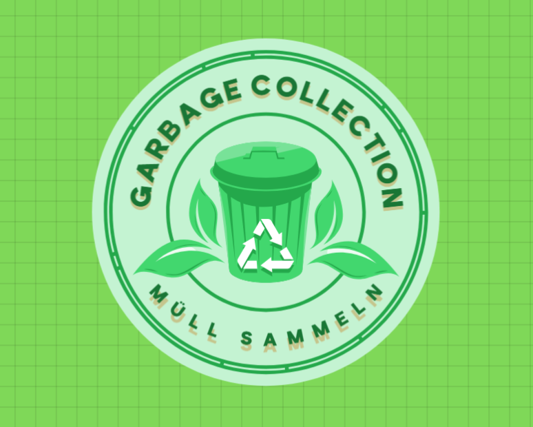

Gehe nach draußen und finde verschmutzte Bereiche in deiner Umgebung.
Filme den Bereich vor und nach der Reinigung in einem Video (15–60 Sekunden).
Lade das Video in der App hoch und lass es von unserer KI analysieren.
Erhalte automatisch Punkte basierend auf der gesammelten Müllmenge!